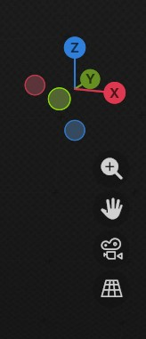

À la souris
Orbiter
Maintenez le bouton du milieu (molette pressée) et glissez.
Déplacer
Maj + bouton du milieu, glissez : panoramique.
Zoomer
Tournez la molette, en avant ou en arrière.
Compléments
- Ctrl + bouton du milieu, glissez : zoom progressif.
- Alt + bouton du milieu, glissez : la vue s'aligne sur l'axe le plus proche.
Cadrer et afficher
Origine
cadrer toute la scène
Zmenu circulaire des modes d'affichage : Wireframe, Solid, Material Preview, Rendered
Le pavé numérique
Verr num
/Vue locale
*
−Zoom arrière
7DessusCtrl : dessous
8Orbite vers le haut
9Vue opposée
+Zoom avant
4Orbite à gauche
5Perspective ou orthographique
6Orbite à droite
1FaceCtrl : derrière
2Orbite vers le bas
3DroiteCtrl : gauche
Entrée
0Vue à travers la caméra active
.Cadrer la sélection
Vues présentées dans la section 4
Compléments
Les orbites tournent la vue par pas de 15°. Avec Ctrl, les touches 2 4 6 8 font un panoramique. La vue locale isole la sélection ; la même touche ramène toute la scène.
Le bouton du milieu déplace la vue au lieu de la faire tourner ?
Le réglage Middle Mouse Action est passé sur Pan : rétablissez Orbit dans Edit > Preferences > Keymap.
Sur un ordinateur portable
Dans Edit > Preferences > Input :
Emulate 3 Button Mouse
- Orbiter : Alt + clic gauche, glissez.
- Panoramique : Maj+Alt + clic gauche.
- Zoom : Ctrl+Alt + clic gauche.
Emulate Numpad
Les chiffres de la rangée principale remplacent le pavé numérique.
Le gizmo de navigation

- Axes X, Y, Z : cliquez pour aligner la vue ; glissez pour orbiter.
- Loupe : glissez pour zoomer.
- Main : glissez pour un panoramique.
- Caméra : vue à travers la caméra.
- Quadrillage : perspective ou orthographique.